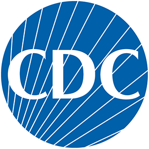

<!DOCTYPE html>
<!DOCTYPE html>
<html lang="en">
  <head>
    <meta charset="UTF-8" />
    <meta name="viewport" content="width=device-width, initial-scale=1.0" />
    <title>Thank You</title>

    <link rel="stylesheet" href="css/style_template.css" />
  </head>
</html>

<html lang="en">
  <head>
    <meta charset="UTF-8" />
    <meta name="viewport" content="width=device-width, initial-scale=1.0" />
    <title>Ridhima Reddy</title>
    <link rel="preconnect" href="https://fonts.googleapis.com" />
    <link rel="preconnect" href="https://fonts.gstatic.com" crossorigin />
    <link
      href="https://fonts.googleapis.com/css2?family=Exo+2:ital,wght@0,100..900;1,100..900&family=Inter&display=swap"
      rel="stylesheet"
    />
    <link
      rel="stylesheet"
      href="https://cdnjs.cloudflare.com/ajax/libs/font-awesome/6.0.0-beta3/css/all.min.css"
    />
    <link rel="stylesheet" href="style_template.css" />
    <style>
      .splash img {
        display: block; /* Centers the image */
        margin: 0 auto; /* Centers the image horizontally */
      }
    </style>
  </head>
  <body>
    <nav>
        
      <p>Ridhima Reddy</p>
      <p><a href="contact.html">Contact Ridhima</a></p>
    </nav>
    <section class="splash">
      <h1>Ridhima Reddy</h1>
      
      <p>Athens, GA &bull; 470-240-9939 &bull; ridhima.reddy@gmail.com</p>
      <p>
        
        My name is Ridhima, and I'm currently pursuing a degree in Computer Science with a concentration in Data Science at the University of Georgia. I am a highly motivated student seeking a full-time position to apply and further develop my technical and project management skills.
      </p>
      <hr />
    </section>

    <section>
        <h2>Education</h2>
        <p><strong>University of Georgia, Franklin College of Arts & Sciences</strong></p>
        <p><strong>Degree:</strong> Bachelor of Science in Computer Science, Expected May 2025</p>
        <p><strong>GPA:</strong> 3.8/4.0</p>
        <p><strong>Relevant Courses:</strong> Software Development, Data Science, Algorithms, Computer Architecture, Computer Networks, Database Management, Discrete Mathematics, Linear Algebra</p>
      </section>
      
      

      <section>
        <h2>Honors and Awards</h2>
        <p><strong>Data Science Certificate</strong>, Expected May 2025</p>
        <p><strong>Zell Miller Scholarship Recipient</strong>, Fall 2021 - Present</p>
      </section>
      

      <section>
        <h2>Skills</h2>
        <p><strong>Programming Languages:</strong> Python, Java, C, SQL, R, HTML, CSS</p>
        <p><strong>Data Science Frameworks & Libraries:</strong> NumPy, Pandas, Scikit-learn, TensorFlow, PyTorch, Matplotlib, Seaborn</p>
        <p><strong>Databases:</strong> MySQL, PostgreSQL</p>
        <p><strong>Tools & Software:</strong> Git, Jupyter Notebook, VS Code, Eclipse, Tableau, Power BI, AWS</p>
      </section>
      

      <section>
        <h2>Leadership and Experience</h2>
        <p><strong>Data Science Intern</strong> at <a href="https://www.boozallen.com/" target="_blank">Booz Allen Hamilton</a> (May 2022 - Present)</p>
        <p><strong>Research Assistant</strong> at Center for Disease Control and Prevention (Atlanta, GA) (May 2024 - Present)</p>
        <p><strong>Senior Data Analyst</strong> at RippleMatch (July 2018 - May 2022)</p>
      </section>
      

    <section>
      <h2>Projects</h2>
      <div class="three-col">
        <div class="card">
          
          <h3>Email Text Analysis</h3>
          <ul>
            <li>Contributed to the CDC by creating and automating text preprocessing methods for data analysis, ensuring data consistency and quality for text mining, and markedly increasing workflow efficiency. </li>
            <li>
                Created an algorithm to analyze and visualize trends in data
            </li>
          </ul>
        </div>
        <div class="card">
          
          <h3>W-EPIC (Wastewater Evaluation, Prediction, and Impact of Covid-19)</h3>
          <ul>
            <li>Detected 87.6 % of high-risk COVID-19 outbreaks in communities up to seven days earlier than clinical case reporting.</li>
            <li>
                Provided valuable data to health authorities for targeted testing and resource allocation.
            </li>
          </ul>
        </div>
        <div class="card">
          
          <h3>Product Roadmap</h3>
          <ul>
            <li>Developed a Power BI dashboard to visualize and manage a product roadmap and delivery schedule</li>
            <li>
                Provided clear insights and facilitating efficient project planning and execution.
            </li>
          </ul>
        </div>
      </div>
    </section>
    <footer>
      &copy; <a href="contact.html">Ridhima Reddy</a>
      <a href="https://www.linkedin.com/in/ridhima-reddy-b556141b2/">
        <i class="fab fa-linkedin"></i
      ></a>
    </footer>
  </body>
</html>